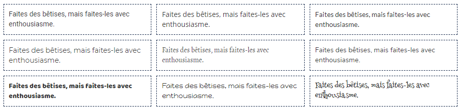

Download ‘Google’ fonts (via google-webfonts-helper) and generate CSS to use in rmarkdown documents and shiny applications. Some popular fonts are included and ready to use.
Installation
Install from CRAN with:
install.packages("gfonts")You can install the development version from GitHub with:
# install.packages("remotes")
remotes::install_github("dreamRs/gfonts")Download a font to use it locally
Get the ID of the desired font between 1955 available :
Download the files necessary for its use and generate the appropriate CSS code :
setup_font(
id = "roboto",
output_dir = "path/to"
)Use it in {shiny} or {rmarkdown} :
use_font("roboto", "www/css/roboto.css")Included fonts
Some fonts are included in the package and ready to use :
use_pkg_gfont("roboto")
Related packages
- Package
googlefontRprovides helper functions to ease the use of Google Fonts with R. - Package
showtextmakes it easy to use various types of fonts (TrueType, OpenType, Type 1, web fonts, etc.) in R graphs.